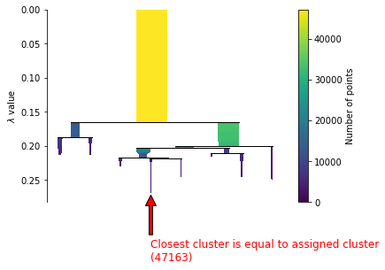

Motivation: better Speaker Reco
Keywords: Speaker Reco, XAI
SpeakerLens 系统展示
音频
audio source
assets/audio/audio_a.wav
定位

localization image source
assets/localization/audio_a.png
解释
Loading explanation...
润色
Loading polish...
对比
这里后续展示不同方法之间的比较。
问询
这里后续接入 LLM 问答模块。